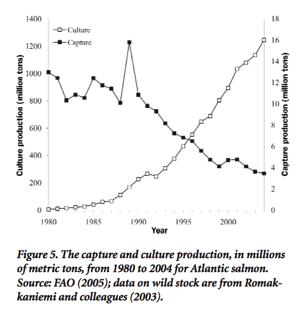

A recent article in BioScience [1] focused on the relationship between aquaculture and conservation. This topic is quite interesting to me, but it's obviously subtle. I don't have well-defined thoughts except that (i) aquaculture could theoretically relieve pressure on some wild fisheries and (ii) certain aquaculture operations have proven negative impacts on some ecosystems.
This paper aims to highlight broad trends in capture and culture fisheries and quantify effects on biodiversity. I only skimmed it and can't say how it does overall but one thing jumped out at me.

The author, James Diana [2], describes a trend (shown in the figure reproduced here [3]) as "market substitution". Now, the wild capture (black dots) going down and the culture production (white dots) going up makes for a tidy substitution story. But the figure uses dual-scaled axes (which you might never want to use ), so the real story might look something like the second figure (data simulated in R by yerstruly):
The second figure makes clear that the changes in wild capture during 1980 to 200x were mere noise compared to the changes in aquaculture production. Seems like something more fundamental than simple market substitution might underly the aquaculture growth, no? In reality, the white dots represent growth due to the successful commoditization of what was formely a luxury good— wild caught salmon—essentially the creation of a new market. (Aside: this curve is probably similar to the curve we'd see if we plotted, starting during the late 1800's, Pacific canned salmon production against East Coast wild capture Atlantic production... another case where a new market was created through commoditization.)
My question: what effect does the underlying market shift have on our ability to infer market substitution from production data?
- 1. Diana, J.S. 2009. Aquaculture production and biodiversity conservation. BioScience. 59:27-38.
- 2. Who is well-established, well-educated (he went to UA ;-), and an expert on aquaculture, mostly shrimp-culture in SE asia. He might have a more subtle economic analysis underlying this trend analysis, or this might be Econ 101 and I'm just confused.
- 3. ...for the purposes of comment or criticism, i.e. under fair use